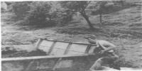
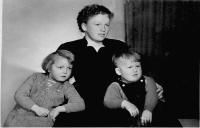
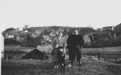
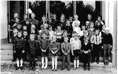
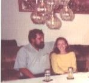

Über uns
Mein Vater starb als ich 2,5 Jahre alt war.
Hier ist er gerade bei der Arbeit am Strassenbau.
Aufnahme von ca. 1958.
Dies ist meine Mutter mit mir und meiner großen Schwester. Meine kleine Schwester ist da noch im "Werden".
Aufnahme von 1960.
Hier noch mal meine Mutter, Vater und große Schwester zusammen mit mir.
Aufnahme von 1959.
Dies ist mein erster Schultag im September 1964 in der Volksschule in Burgthann/Mittelfranken.
Dies ist meine Schwester Birgit und ihr Mann Hermann.
|